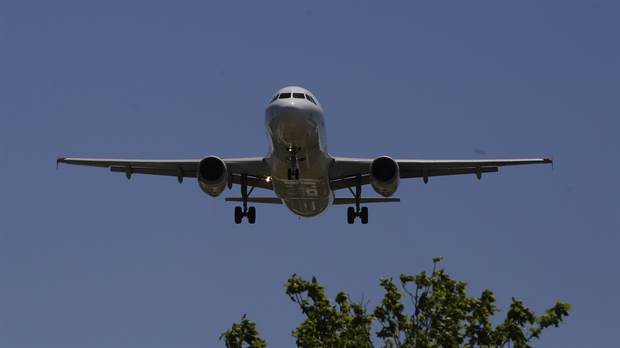

Visita el foro de DronArg
En el foro de DronArg puedes realizar consultas,publicar imagenes y recomendar lugares para volar!
Ir al foroEl taxi-dron ya es una realidad en Dubai!

Los "drones de pasajeros", con capacidad para transportar un solo ocupante y una valija chica, ya empezarán a sobrevolar el emirato en julio, según el director de la autoridad de transporte público de la ciudad, como parte de un ambicioso plan para fomentar la tecnología de autoconducción.
Ver articulo completoUn dron en Aeroparque choco con un avion de Aerolineas Argentina
El Boeing 737-800 estaba en plena maniobra de aterrizaje cuando fue impactado por un drone a la altura de Tierra Santa, en Costanera; sólo sufrió daños menores.
Ver articulo completoSkyFront, el drone con mas autonomia

El último récord lo ha batido el Skyfront Tailwind, que se ha mantenido en el aire durante 4 horas y 34 minutos. Se trata de una marca que multiplica por diez lo que ofrecen otros drones que se sitúan entre la gama profesional y el consumo.
Ver articulo completo